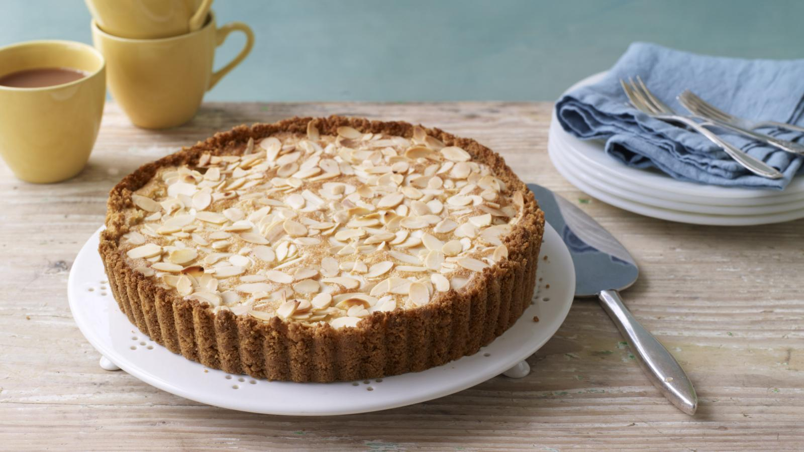

Apple Frangipane Tart

Description
With a base of crushed biscuits, rather than pastry, this tart is quick to make – no need for any rolling out or baking blind.
The apple and almond go so well together too.
Make it a day ahead then just reheat it when you are ready to serve.
Equipment: You will need a 20cm/8in round, loose-bottomed fluted tart tin with 3-4cm/1¼-1½ in sides.
Ingredients
For the tart base
175g/6oz digestive biscuits
75g/3oz butter
200g/7oz Bramley apples
For the frangipane filling
75g/3oz butter, softened
75g/3oz caster sugar
2 free-range eggs, beaten
75g/3oz ground almonds
1 tsp almond extract
50g/1¾oz flaked almonds
Instructions
- Preheat the oven to 200C/180C Fan/Gas 6.
- Put the biscuits in a large re-sealable freezer bag and bash with a rolling pin into fine crumbs. Melt the butter in a small pan, then add the biscuit crumbs and stir until coated with butter. Tip into the tart tin and, using the back of a spoon, press over the base and sides of the tin to give an even layer. Chill in the fridge while you make the filling.
- Cream together the butter and sugar until light and fluffy. (You can do this in a food processor if you have one. Process for 2-3 minutes.) Mix in the eggs, then add the ground almonds and almond extract and blend until well combined.
- Peel the apples, and cut thin slices of apple. (Do this at the last minute to prevent the apple going brown.) Arrange the slices over the biscuit base. Spread the frangipane filling evenly on top. Level the surface and sprinkle with the flaked almonds.
- Bake for 20-25 minutes until golden-brown and set.
- Remove from the oven and leave to cool for 15 minutes.
- Remove the sides of the tin. (An easy way to do this is to stand the tin on a can of beans and push down gently on the edges of the tin.)
- Transfer the tart, with the tin base attached, to a serving plate.
- Serve warm with cream, crème fraiche or ice cream.